14 reels + 7 carruseles · 3 por día (12:00 reel · 18:00 carrusel · 21:30 reel) · del martes 17 al lunes 23 de noviembre.
Todo sale al mismo tiempo en Instagram y Facebook, programado. A los 3 días de cada publicación medimos qué funcionó mejor que nuestro promedio y eso define la semana siguiente.
Lo dormiste a upa, lo apoyás despacito en la cuna… y abre los ojos 🥲 🤍 No está malcriado y no estás haciendo nada mal. 🌙 Pasa esto: se durmió en tus brazos y, cuando se despierta entre un sueño y otro, ya no está donde se durmió. Entonces te busca para volver a dormirse. 🧩 Lo primero que conviene revisar: que la teta o el upa no sean lo último antes de dormirse. Ponelos en el medio de la rutina, no al final. 💬 Comentá DORMIR y te mando por privado el Método Tranquilito 🌙 el plan de 10 días para que aprenda a dormirse solito, sin dejarlo llorar 💌 #MetodoTranquilito #SueñoInfantil #MaternidadReal #CrianzaRespetuosa #BebéTranquilo #MamáPrimeriza
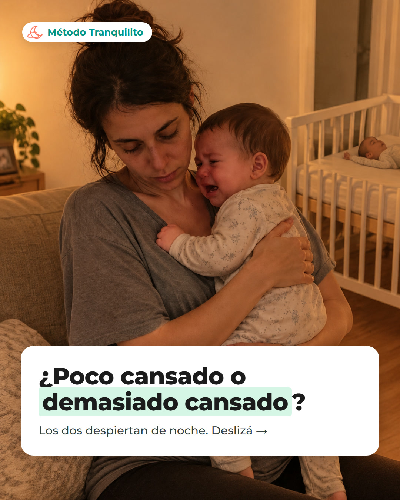
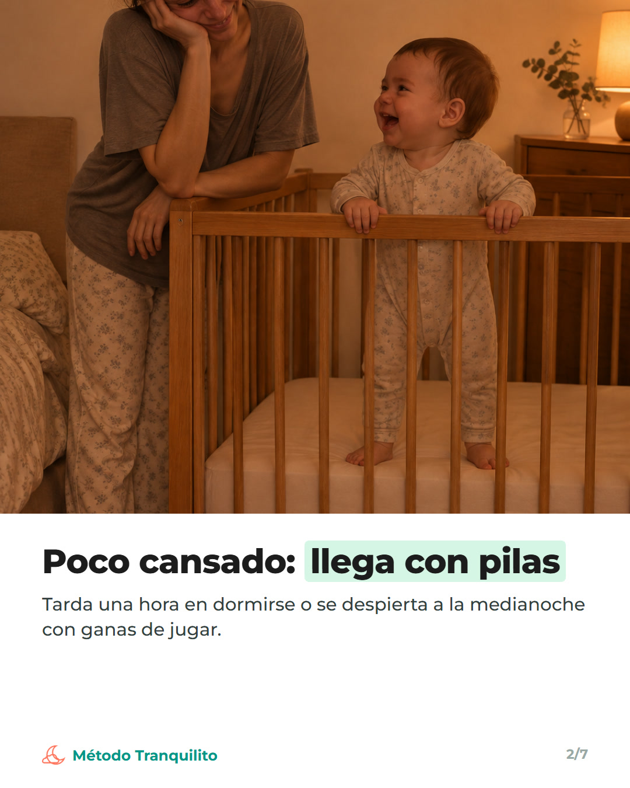
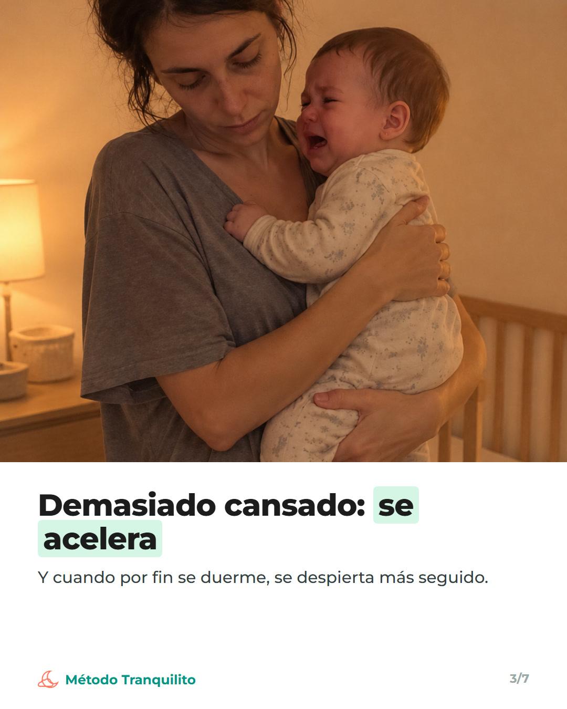
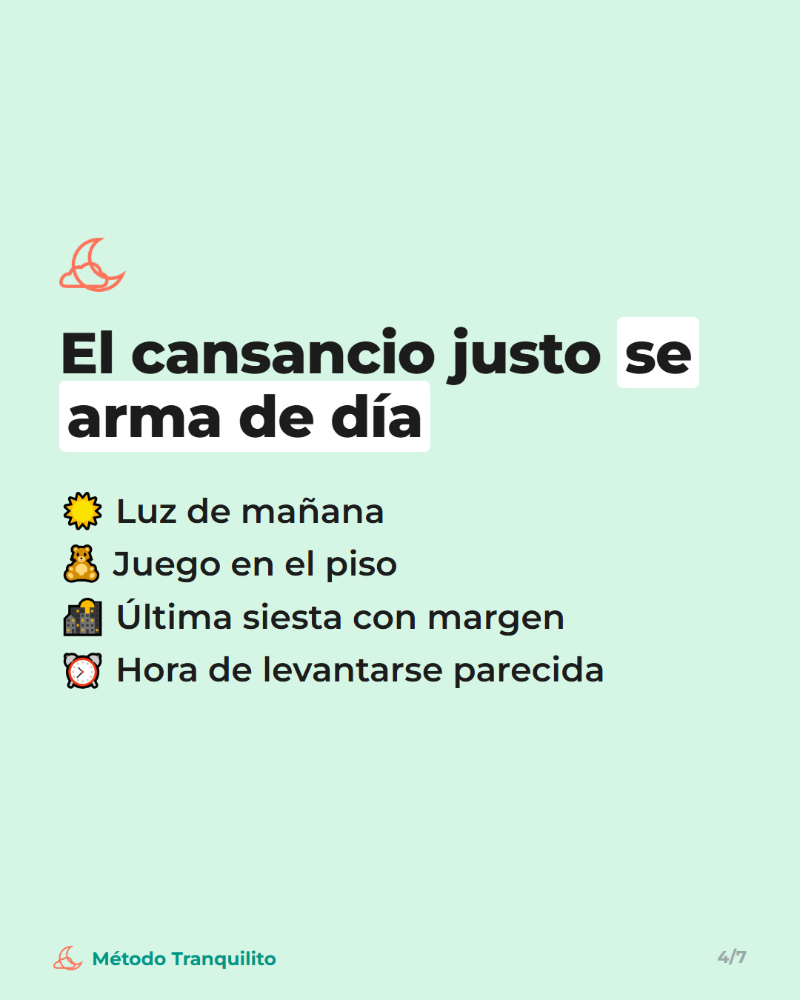
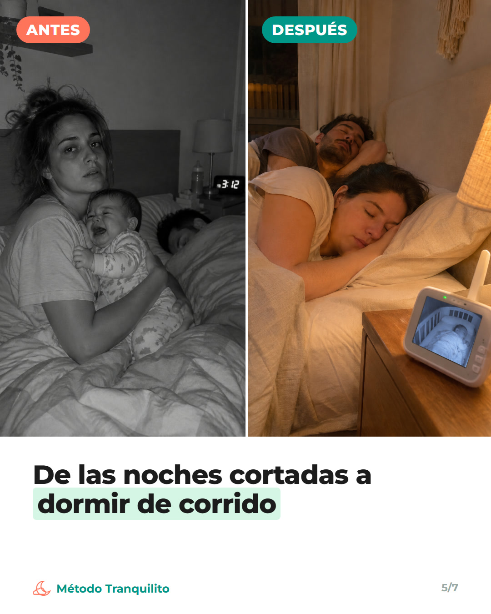
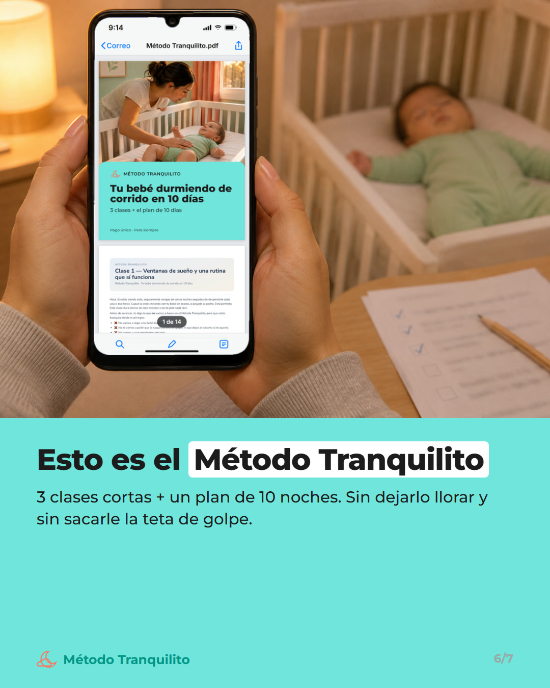
¿Tu bebé llega a la noche con poco cansancio o con demasiado? 🤔 🔋 Los dos terminan igual: noches cortadas. ☀️ Lo bueno: el cansancio justo se arma de día, y cuando llega bien a la noche, la noche cambia. 🌙 Deslizá hasta el final y mirá cómo se ve del otro lado. 💬 Comentá DORMIR y te mando por privado el Método Tranquilito 🌙 el plan de 10 días para que aprenda a dormirse solito, sin dejarlo llorar 💌 #MetodoTranquilito #SueñoInfantil #MaternidadReal #CrianzaRespetuosa #BebéTranquilo #MamáPrimeriza
Si las noches se te cortan cada 45 minutos o cada hora, hay una explicación 🌙 🧠 Los bebés duermen en ciclos de más o menos 45 a 60 minutos. Entre un ciclo y otro se despiertan un poquito: eso es normal y sano. 🔁 El tema no es que se despierte. Es que todavía no sabe volver a dormirse sin que vengas a ayudarlo. 🤍 Y eso se aprende, de a poquito y con vos al lado. 💬 Comentá DORMIR y te mando por privado el Método Tranquilito 🌙 el plan de 10 días para que aprenda a dormirse solito, sin dejarlo llorar 💌 #MetodoTranquilito #SueñoInfantil #MaternidadReal #CrianzaRespetuosa #BebéTranquilo #MamáPrimeriza
Esa que confunde a todas: es tarde, debería estar muerto de sueño… y está más activo que nunca 🙃 ⚡ Un bebé pasado de cansancio no se cae dormido: se acelera, llora más y le cuesta muchísimo más dormirse. 👀 Mirá las señales antes de que se pase: se frota los ojos o las orejas, bosteza, mira fijo a la nada o pierde interés en los juguetes. 🌙 Ese es el momento de arrancar la rutina, no media hora después. 💬 Comentá DORMIR y te mando por privado el Método Tranquilito 🌙 el plan de 10 días para que aprenda a dormirse solito, sin dejarlo llorar 💌 #MetodoTranquilito #SueñoInfantil #MaternidadReal #CrianzaRespetuosa #BebéTranquilo #MamáPrimeriza
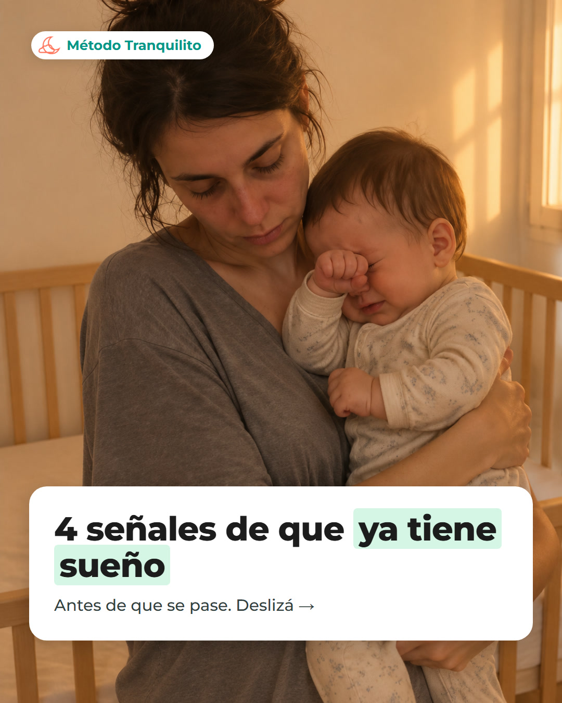
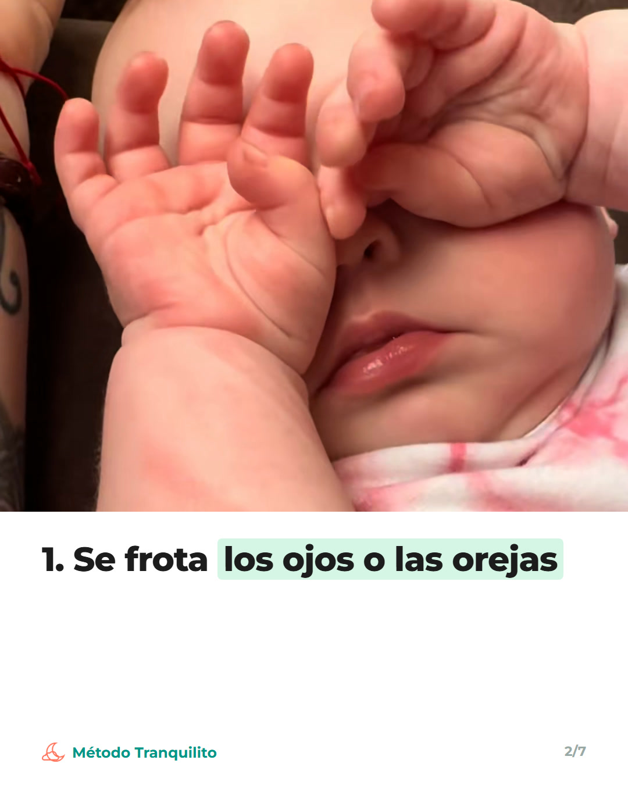
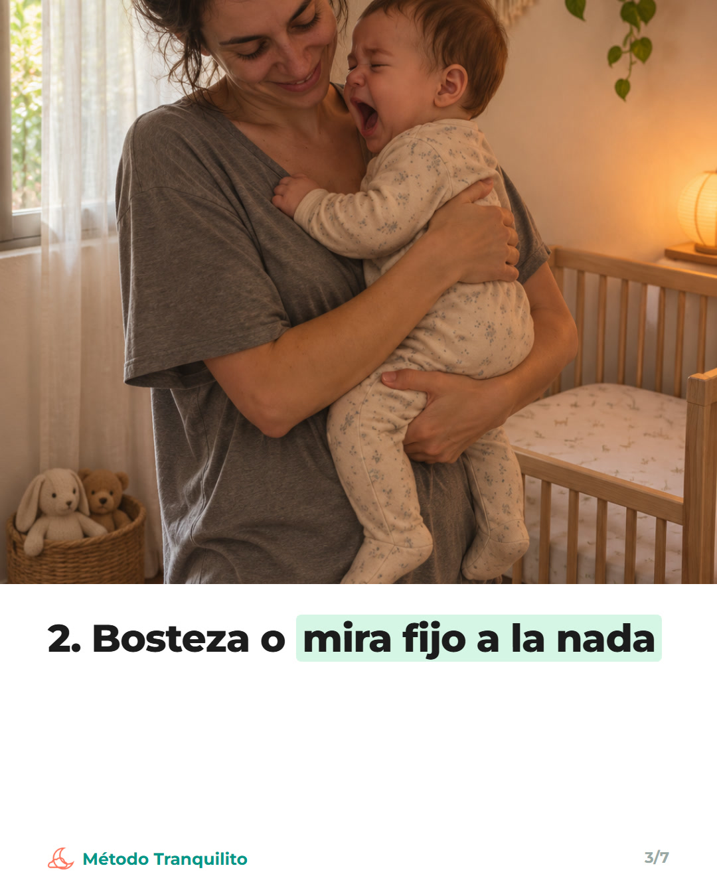
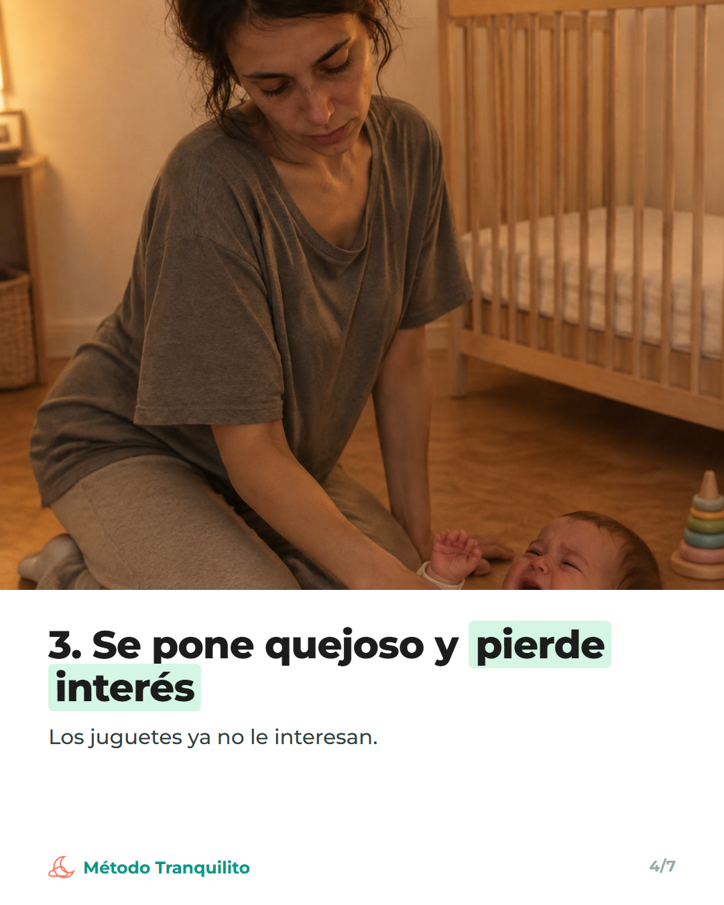
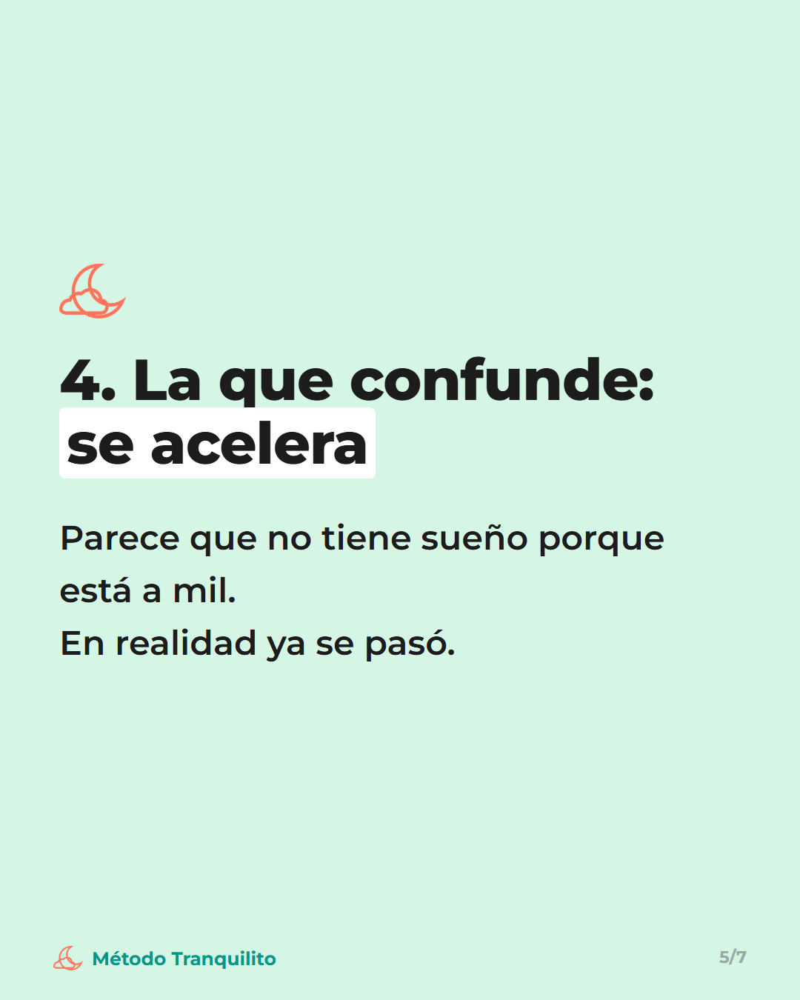
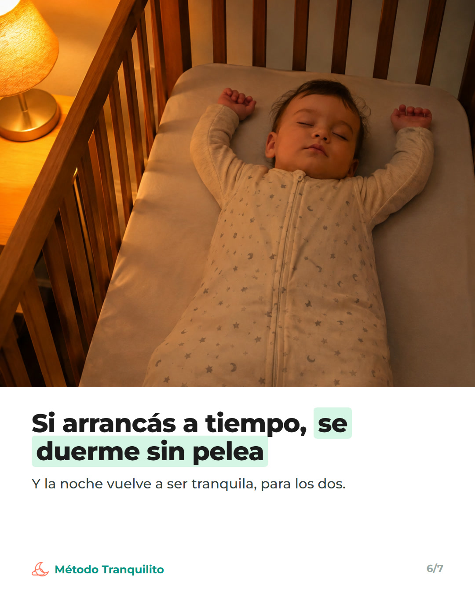
El reloj dice una cosa, tu bebé dice otra 👀 🌙 Las ventanas de sueño son una guía, no una ley. ✨ Si arrancás la rutina apenas aparecen estas señales, se duerme más fácil y duerme mejor. 📌 Guardala para tenerla a mano. 💬 Comentá DORMIR y te mando por privado el Método Tranquilito 🌙 el plan de 10 días para que aprenda a dormirse solito, sin dejarlo llorar 💌 #MetodoTranquilito #SueñoInfantil #MaternidadReal #CrianzaRespetuosa #BebéTranquilo #MamáPrimeriza
Te cuento algo que cambia la forma de ver las noches 🌙 😴 Nadie duerme de corrido de verdad. Los adultos también nos despertamos un poquito entre un ciclo y otro: nos acomodamos la almohada y seguimos. 👶 La diferencia entre un bebé que duerme de corrido y uno que se despierta 6 veces no es que uno se despierte y el otro no. Los dos se despiertan. 🧩 Uno sabe volver a dormirse solo. El otro necesita que vengas. Y eso depende de cómo se duerme la primera vez, cuando lo acostás. 💬 Comentá DORMIR y te mando por privado el Método Tranquilito 🌙 el plan de 10 días para que aprenda a dormirse solito, sin dejarlo llorar 💌 #MetodoTranquilito #SueñoInfantil #MaternidadReal #CrianzaRespetuosa #BebéTranquilo #MamáPrimeriza
"Parece la teta mágica." "Me usa de chupete." Si lo dijiste alguna vez, no sos la única 🤍 💛 La teta no es un mal hábito: es amor, alimento y consuelo. No hay que sacarla. 🌙 Lo único que cambia es una cosa: que la teta deje de ser lo último que pasa antes de dormirse. 🧩 Si se duerme tomando la teta, en cada despertar de la noche la va a pedir para volver a dormirse. 💬 Comentá DORMIR y te mando por privado el Método Tranquilito 🌙 el plan de 10 días para que aprenda a dormirse solito, sin dejarlo llorar 💌 #MetodoTranquilito #SueñoInfantil #MaternidadReal #CrianzaRespetuosa #BebéTranquilo #MamáPrimeriza
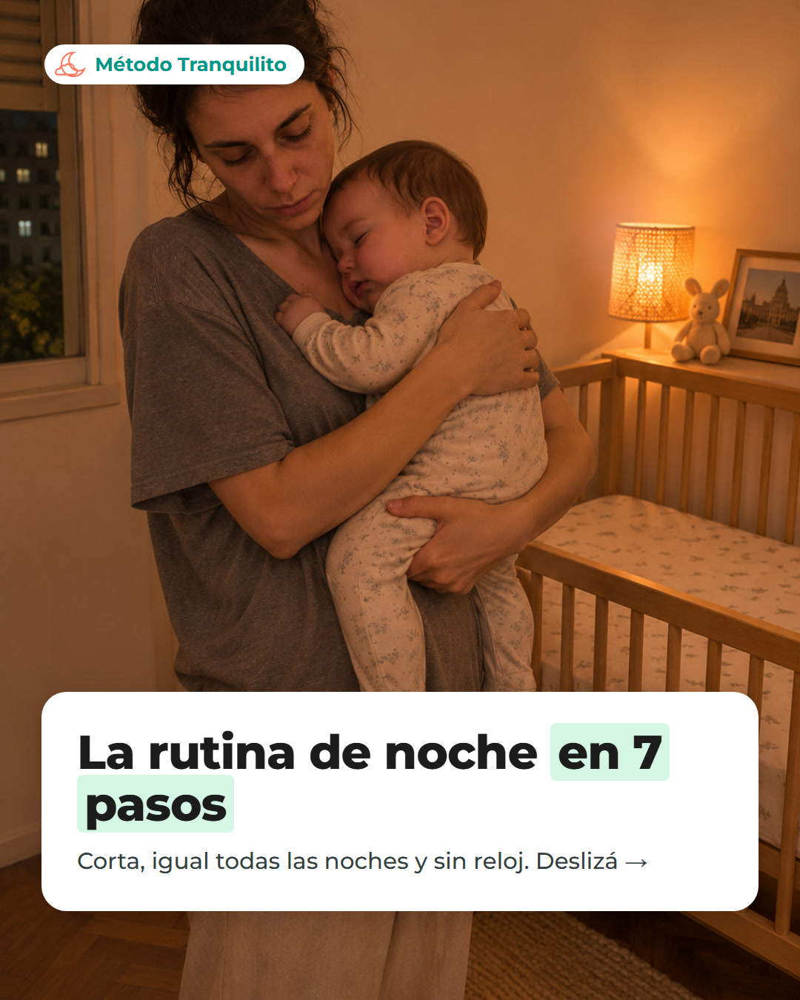
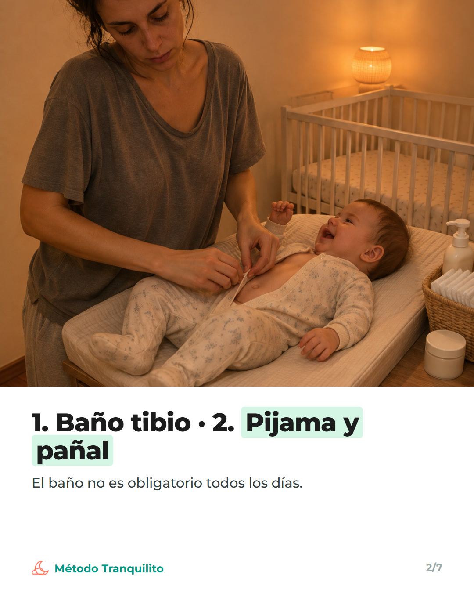
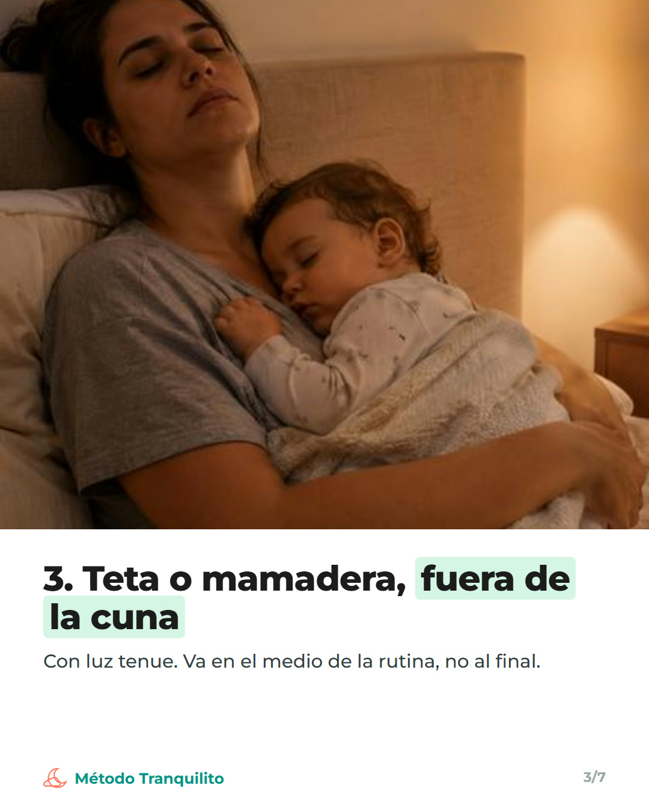
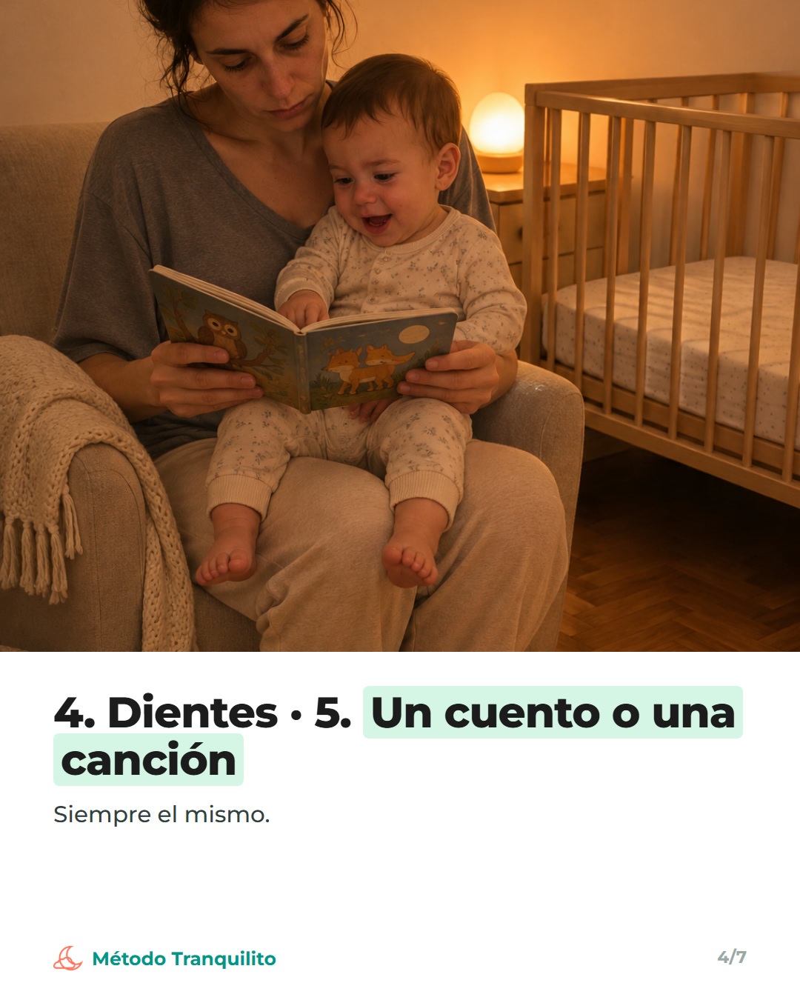
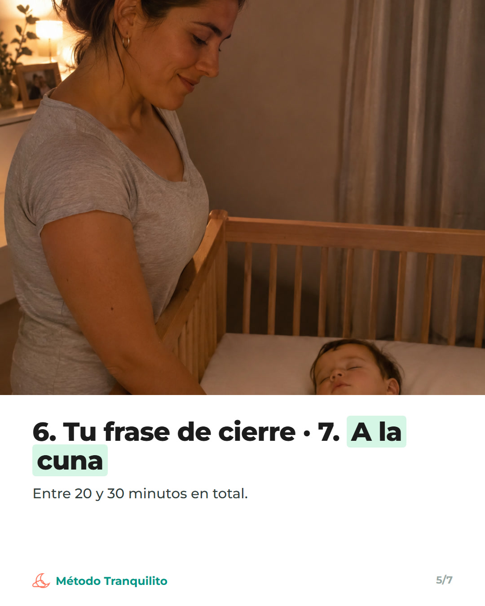
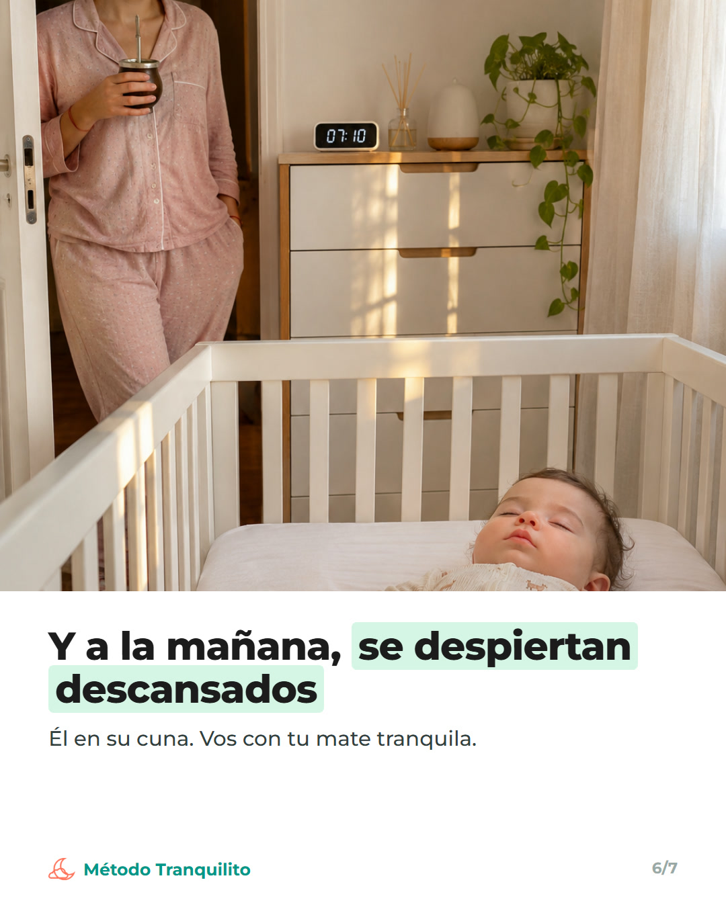
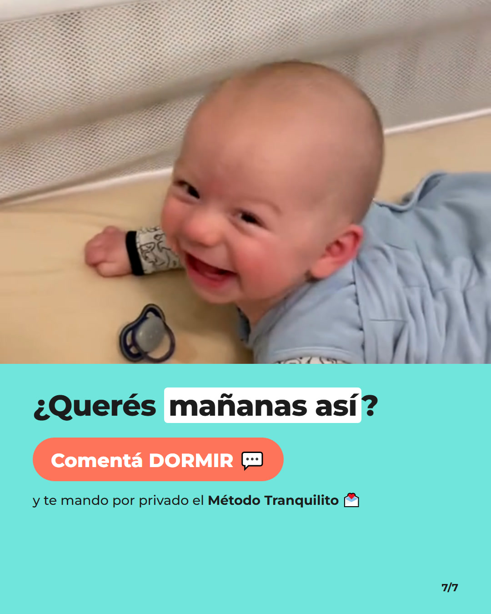
La rutina sirve, pero no por lo que hace cada paso: sirve porque es predecible 🌙 🧩 El detalle que más cambia la noche es el paso 3: la teta en el medio de la rutina, no al final. ☀️ Y lo que viene después es esto: mañanas con un bebé que durmió y una mamá que también. 📌 Guardala para esta noche. 💬 Comentá DORMIR y te mando por privado el Método Tranquilito 🌙 el plan de 10 días para que aprenda a dormirse solito, sin dejarlo llorar 💌 #MetodoTranquilito #SueñoInfantil #MaternidadReal #CrianzaRespetuosa #BebéTranquilo #MamáPrimeriza
Tiene rutina, baño, cuento, pieza oscura… y se sigue despertando 😩 🧩 El error del que casi nadie habla: que se duerma con una ayuda que a la madrugada ya no está. 🛏️ Imaginate dormirte en tu cama y despertarte en el piso de la cocina: te despertarías de golpe, ¿no? A él le pasa lo mismo cuando se duerme en tus brazos y se despierta en la cuna. 🌙 Por eso te llama: para que vuelvas a armar todo como estaba cuando se durmió. 💬 Comentá DORMIR y te mando por privado el Método Tranquilito 🌙 el plan de 10 días para que aprenda a dormirse solito, sin dejarlo llorar 💌 #MetodoTranquilito #SueñoInfantil #MaternidadReal #CrianzaRespetuosa #BebéTranquilo #MamáPrimeriza
Casi todos los consejos hablan de la noche: pieza oscura, ruido blanco, temperatura. Ayudan, pero lo que más pesa pasa de día ☀️ 🌅 Luz de mañana: abrí las cortinas apenas se levanta y, si podés, salí un rato afuera. 🧸 Movimiento y juego en el piso: llega a la noche con un cansancio sano. 🌙 El día prepara la noche. Ese es el corazón del Método Tranquilito. 💬 Comentá DORMIR y te mando por privado el Método Tranquilito 🌙 el plan de 10 días para que aprenda a dormirse solito, sin dejarlo llorar 💌 #MetodoTranquilito #SueñoInfantil #MaternidadReal #CrianzaRespetuosa #BebéTranquilo #MamáPrimeriza
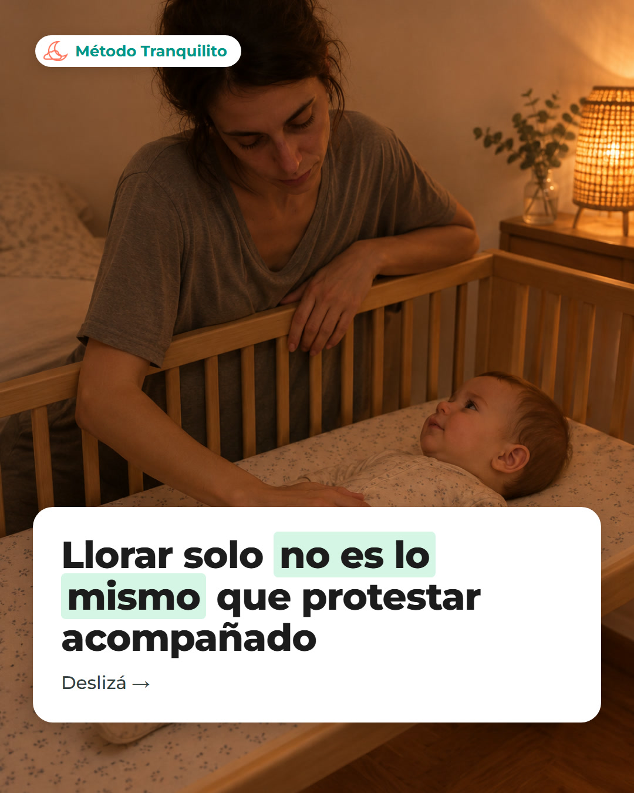
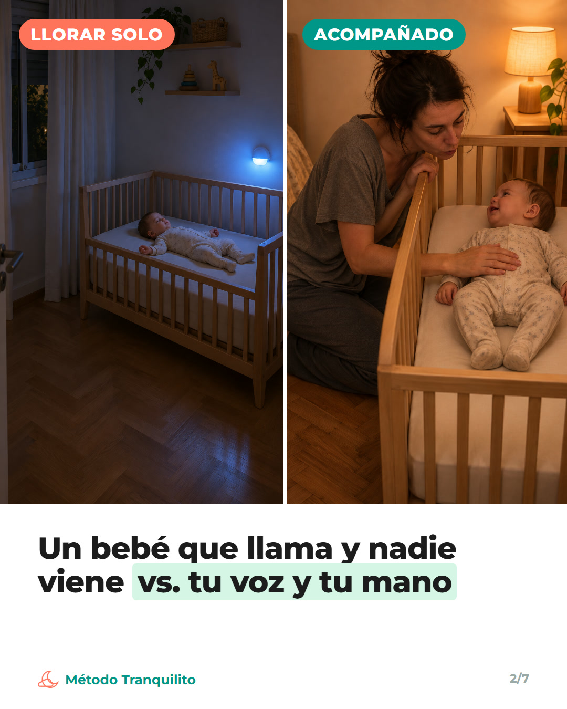
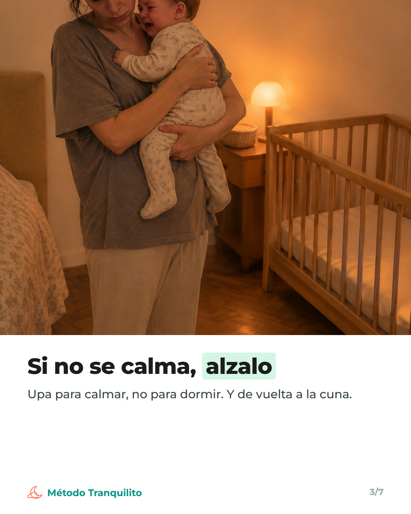
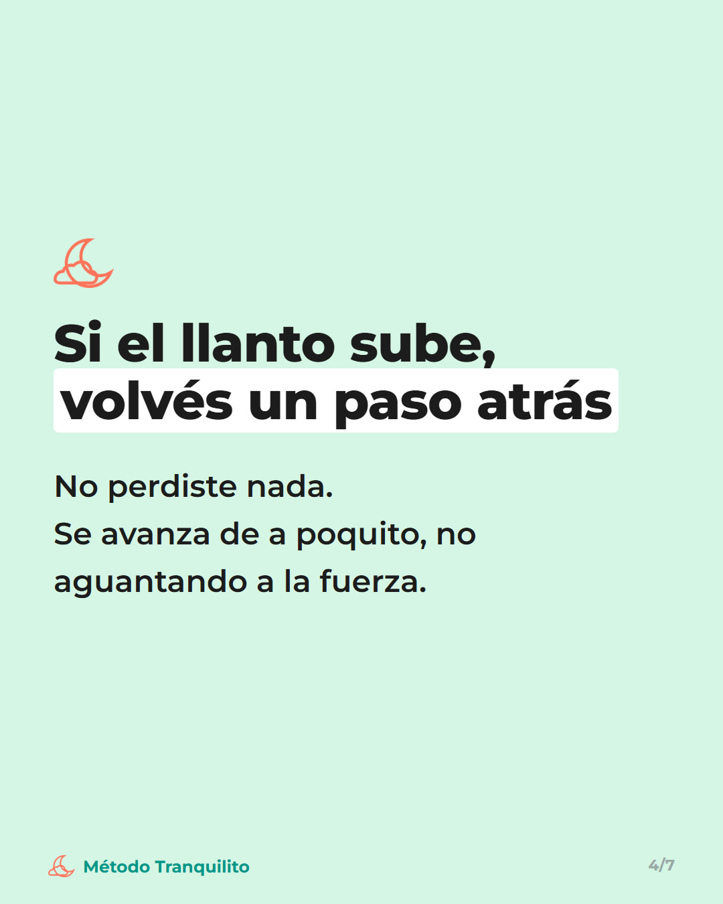
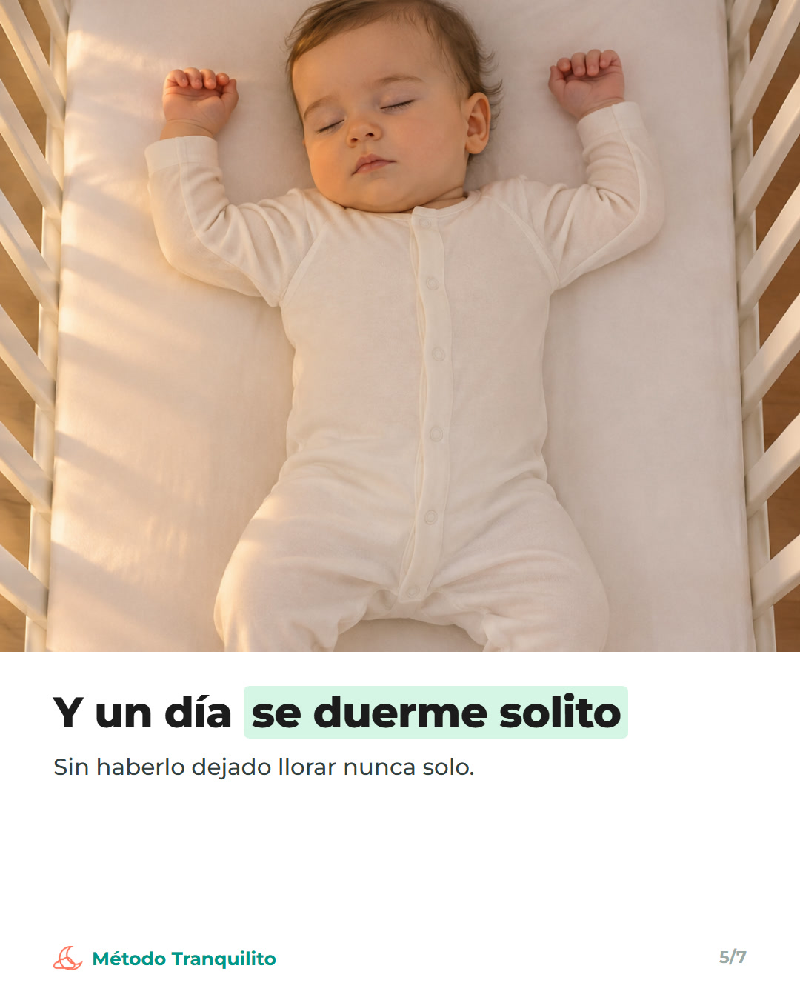
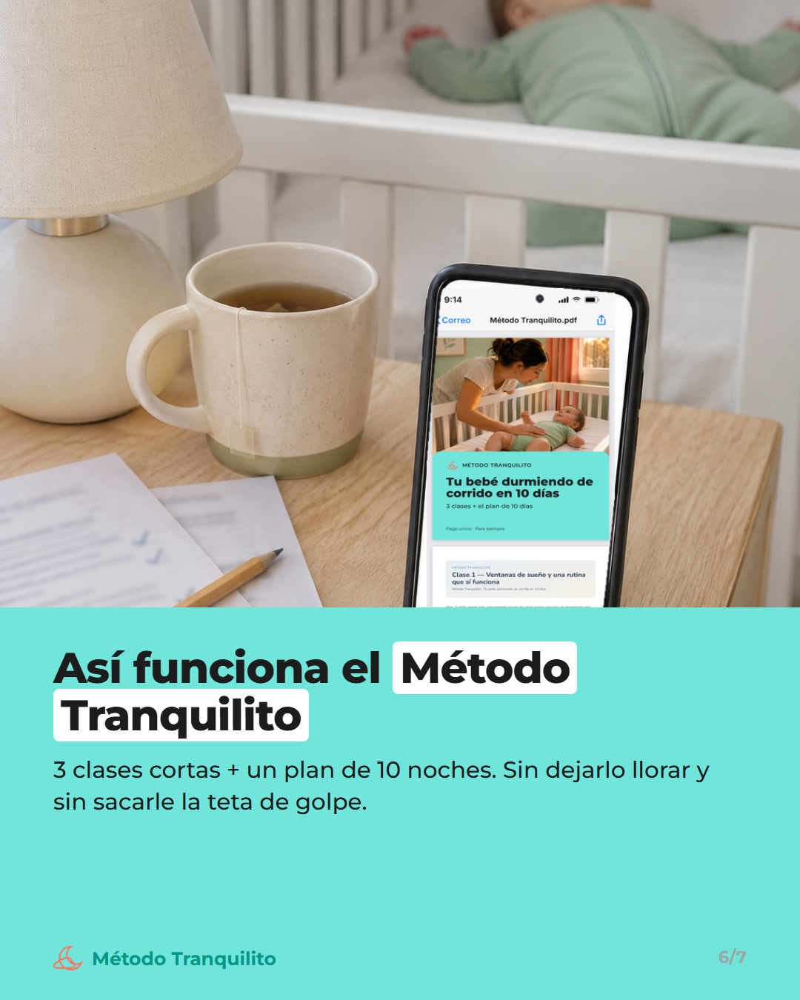
"Mis papás nos dejaban llorar y dormíamos de un tirón. Yo no puedo." Y está muy bien no querer 🤍 🌙 Enseñarle a dormir no es dejarlo llorando solo. ✨ Con vos al lado, de a poquito, llega la noche en que se duerme solito y vos podés descansar. 🧩 Deslizá y mirá la diferencia. 💬 Comentá DORMIR y te mando por privado el Método Tranquilito 🌙 el plan de 10 días para que aprenda a dormirse solito, sin dejarlo llorar 💌 #MetodoTranquilito #SueñoInfantil #MaternidadReal #CrianzaRespetuosa #BebéTranquilo #MamáPrimeriza
Esa siesta larguísima de las 6 que te da un respiro… a las 11 de la noche te la cobra 😅 🔋 Un bebé con poco cansancio llega a la hora de dormir con pilas: tarda una hora en dormirse o se despierta a la medianoche con ganas de jugar. ⏰ Que la última siesta del día termine con un buen rato de margen antes de la hora de ir a dormir. 🧩 Siestas ordenadas, no perfectas. 💬 Comentá DORMIR y te mando por privado el Método Tranquilito 🌙 el plan de 10 días para que aprenda a dormirse solito, sin dejarlo llorar 💌 #MetodoTranquilito #SueñoInfantil #MaternidadReal #CrianzaRespetuosa #BebéTranquilo #MamáPrimeriza
Cuando llora en la cuna, tu trabajo es calmarlo, no dormirlo. Son dos cosas distintas 🤍 🗣️ Primero tu voz, bajito, con tu frase de siempre. ✋ Después tu mano, apoyada en su panza o en su espalda. 🤱 Si no se calma, alzalo. Sí, alzalo: upa hasta que se calme, no hasta que se duerma. Y de vuelta a la cuna. 💬 Comentá DORMIR y te mando por privado el Método Tranquilito 🌙 el plan de 10 días para que aprenda a dormirse solito, sin dejarlo llorar 💌 #MetodoTranquilito #SueñoInfantil #MaternidadReal #CrianzaRespetuosa #BebéTranquilo #MamáPrimeriza
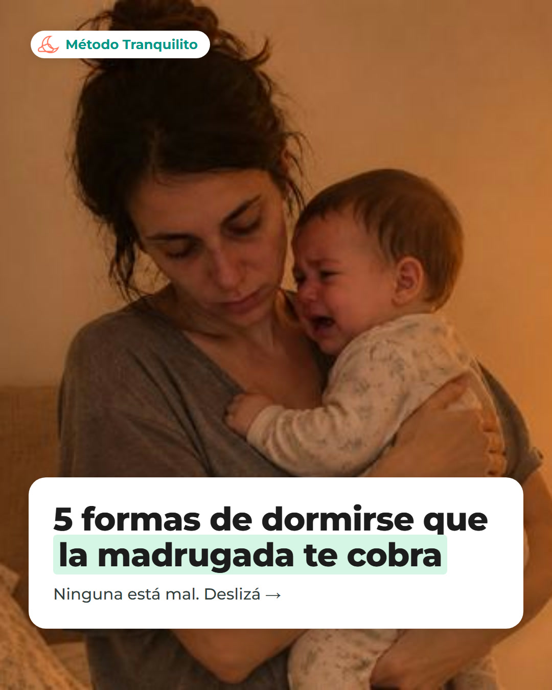
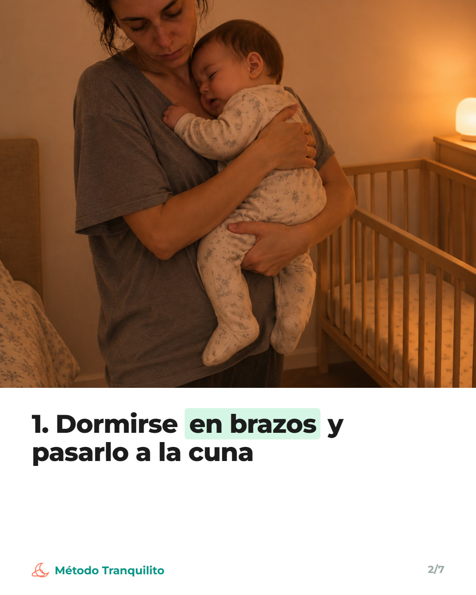
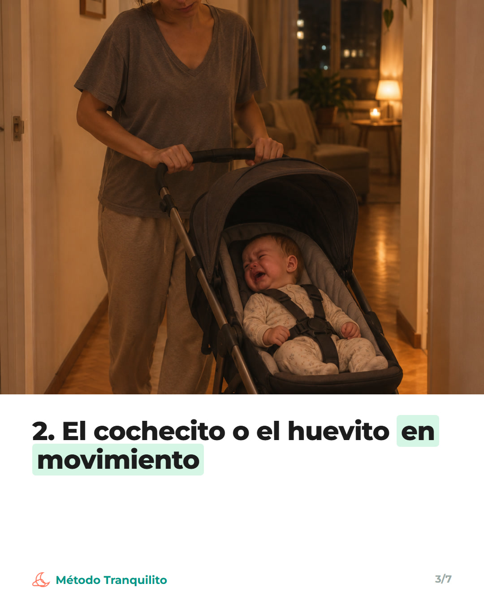
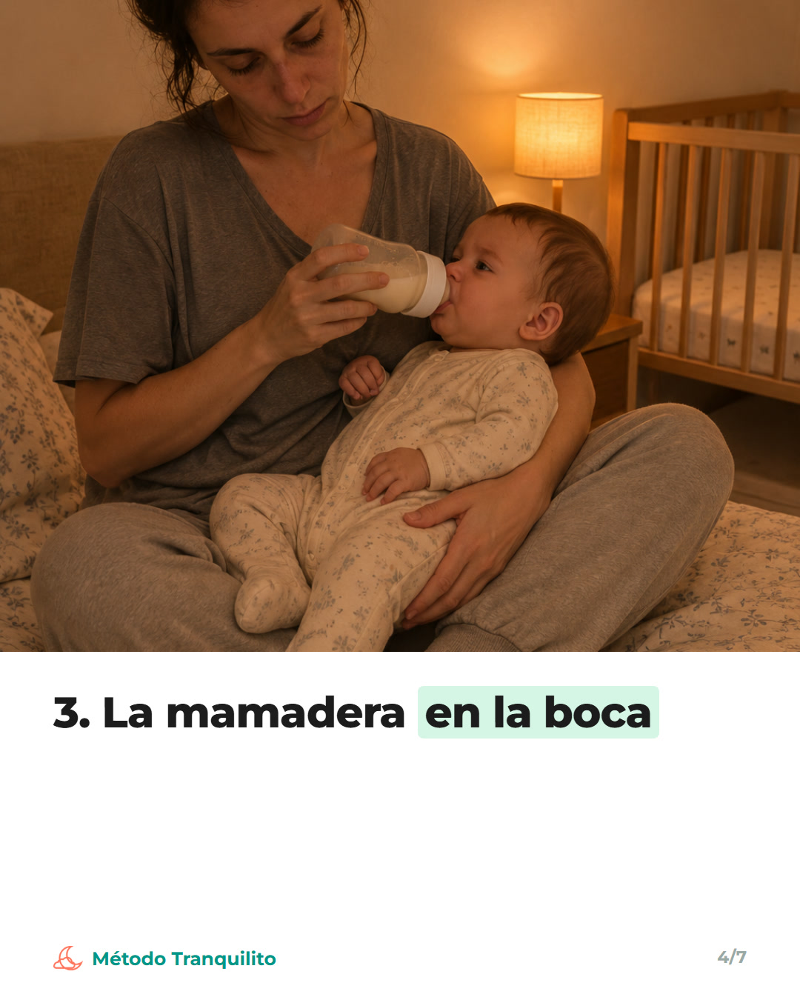
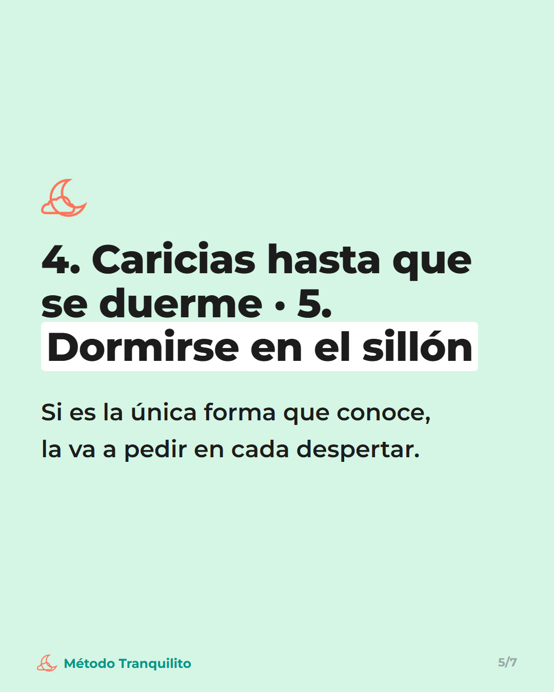
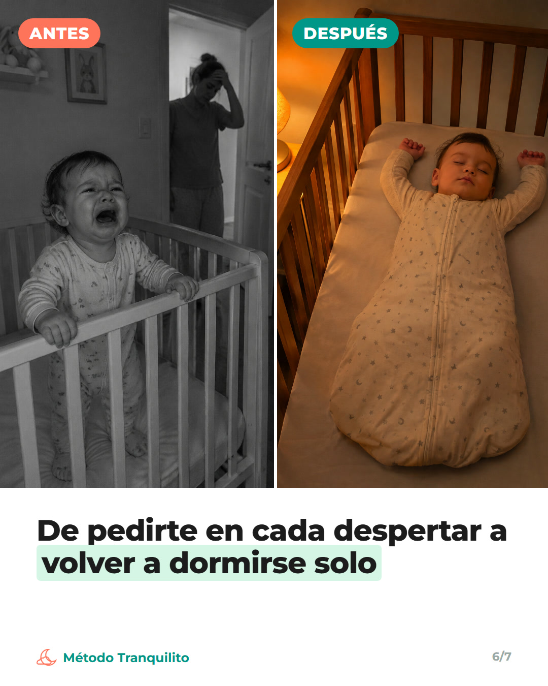
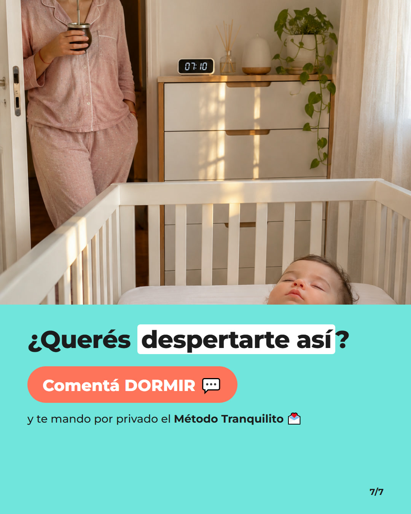
Ninguna de estas formas está mal 🤍 🌙 El tema es que, si es la única que conoce, a la madrugada la va a pedir cada vez que se despierta entre un ciclo y otro. ✨ Cuando aprende otra forma de dormirse, empieza a usarla también a la madrugada. Y ahí la noche cambia. 🧩 ¿Con cuál se duerme el tuyo? 💬 Comentá DORMIR y te mando por privado el Método Tranquilito 🌙 el plan de 10 días para que aprenda a dormirse solito, sin dejarlo llorar 💌 #MetodoTranquilito #SueñoInfantil #MaternidadReal #CrianzaRespetuosa #BebéTranquilo #MamáPrimeriza
Se queja a la madrugada y saltás de la cama antes de abrir los ojos. Te entiendo 🥲 ⏳ Probá esto: cuando se despierta, esperá un momentito, apenas unos segundos. 🌙 Muchas veces se vuelve a dormir solo. Si vas enseguida, capaz lo despertás del todo. 🤍 Si no se calma, vas, como siempre. Nunca solo, siempre acompañado. 💬 Comentá DORMIR y te mando por privado el Método Tranquilito 🌙 el plan de 10 días para que aprenda a dormirse solito, sin dejarlo llorar 💌 #MetodoTranquilito #SueñoInfantil #MaternidadReal #CrianzaRespetuosa #BebéTranquilo #MamáPrimeriza
Parece una pavada, pero no lo es ✨ 🗣️ Elegí una frase de cierre y decila todas las noches igual. Por ejemplo: "a dormir, mi amor, hasta mañana". 🧠 Cuando todas las noches pasa lo mismo, en el mismo orden, el cuerpo de tu bebé aprende: después de esto viene dormir. Y se va aflojando solo. 🌙 La rutina no sirve por cada paso: sirve porque es predecible. 💬 Comentá DORMIR y te mando por privado el Método Tranquilito 🌙 el plan de 10 días para que aprenda a dormirse solito, sin dejarlo llorar 💌 #MetodoTranquilito #SueñoInfantil #MaternidadReal #CrianzaRespetuosa #BebéTranquilo #MamáPrimeriza
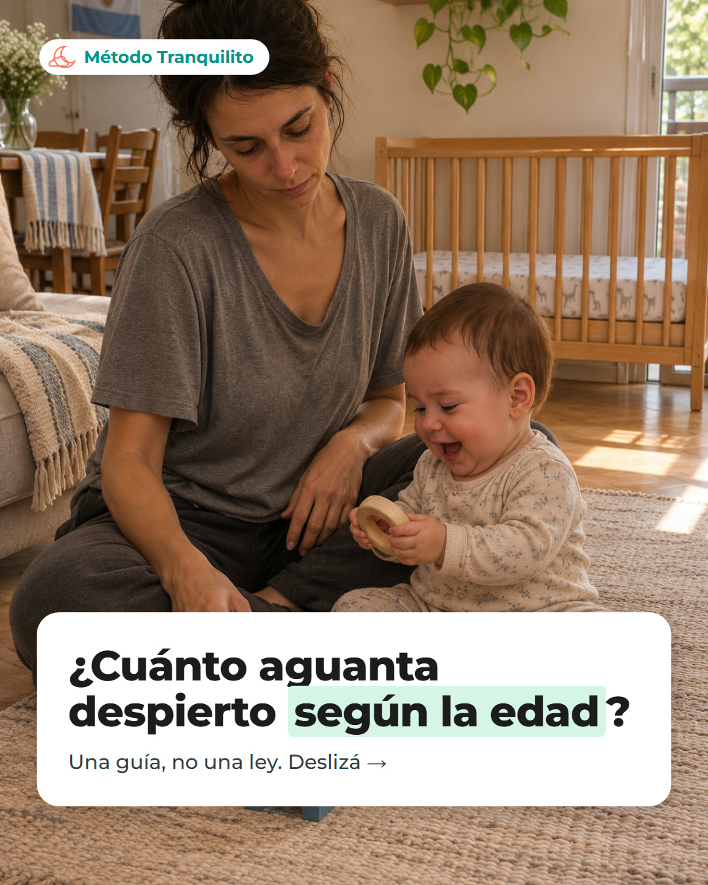
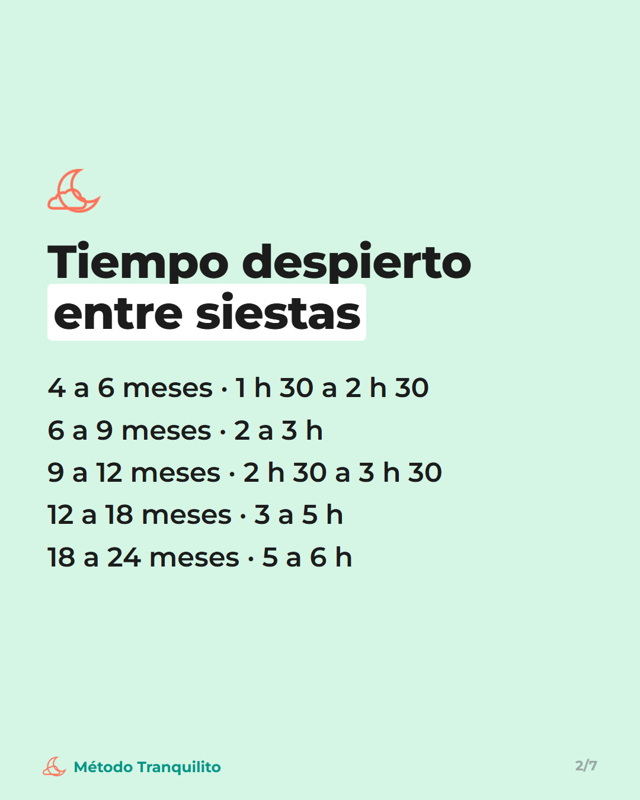
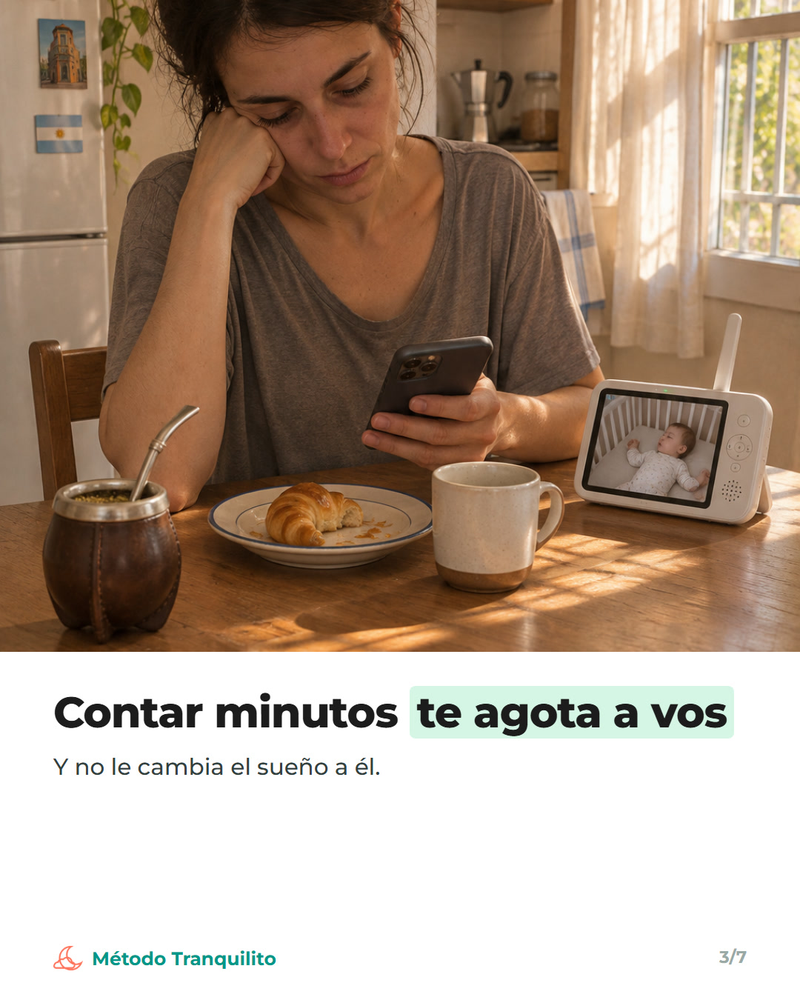
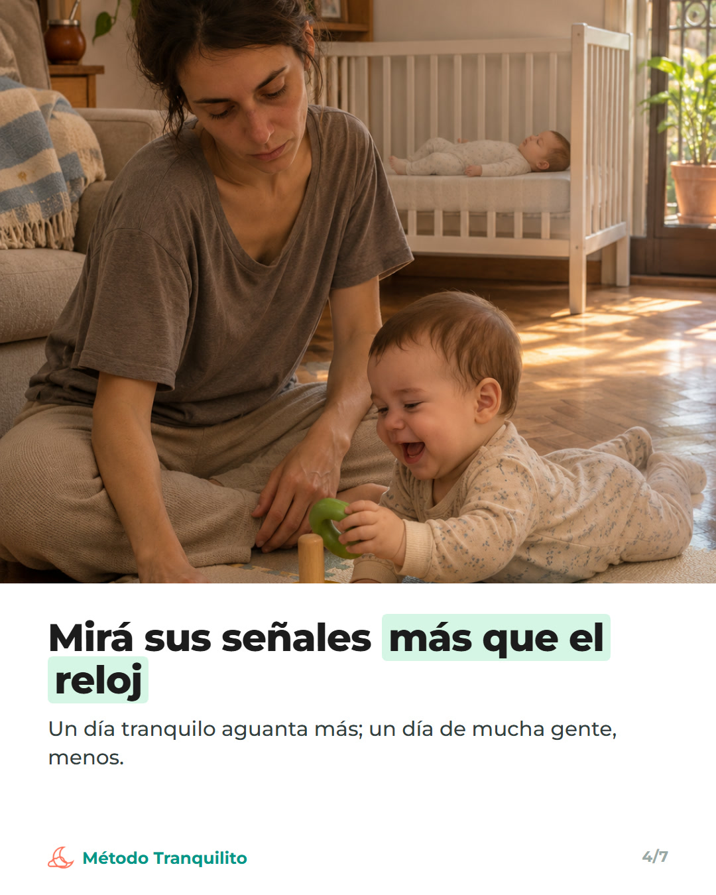
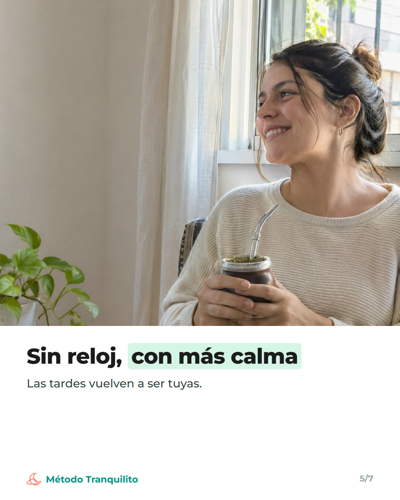
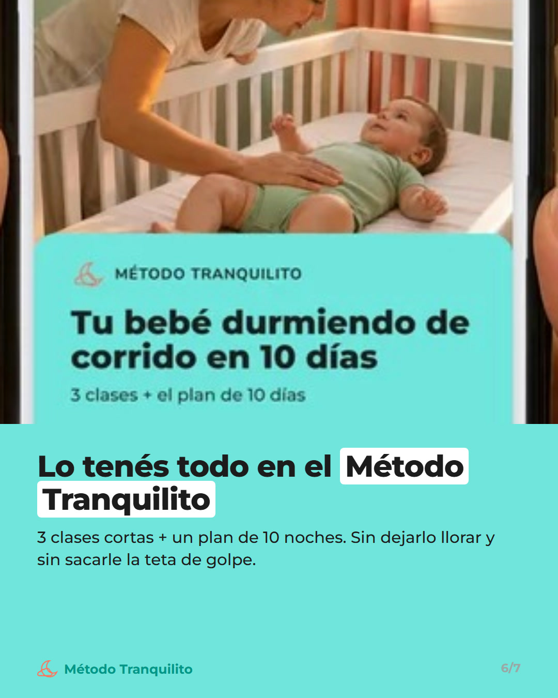
Si sos de las que calcula cada minuto de ventana de sueño y aun así se despierta toda la noche, esto es para vos ⏰ 🌙 La ventana no es una alarma: es un rango aproximado. ✨ Soltar el reloj y mirar a tu bebé también te devuelve a vos la calma. 📌 Guardá la tabla. 💬 Comentá DORMIR y te mando por privado el Método Tranquilito 🌙 el plan de 10 días para que aprenda a dormirse solito, sin dejarlo llorar 💌 #MetodoTranquilito #SueñoInfantil #MaternidadReal #CrianzaRespetuosa #BebéTranquilo #MamáPrimeriza
Fin de semana, se despertó tarde, lo dejaste dormir… y esa noche no hubo forma 😵💫 ⏰ Si un día se levanta a las 7 y otro a las 10, el cuerpo no sabe cuándo tiene que tener sueño. 🌅 Probá con una hora de levantarse parecida todos los días (más o menos media hora) y luz natural apenas se despierta. 🌙 Es de los ajustes más simples y de los que más cambian la noche. 💬 Comentá DORMIR y te mando por privado el Método Tranquilito 🌙 el plan de 10 días para que aprenda a dormirse solito, sin dejarlo llorar 💌 #MetodoTranquilito #SueñoInfantil #MaternidadReal #CrianzaRespetuosa #BebéTranquilo #MamáPrimeriza
A las 3 de la mañana nadie aprende nada: ni él ni vos 🥱 🌙 A esa hora estás muerta de sueño y terminás dándole la teta para que se calme. Y está bien: no te da el cuerpo. ☀️ Los cambios se practican primero en la siesta de la mañana, cuando tiene el sueño justo y vos estás más entera. 🧩 Cuando lo logra de día, recién ahí lo pasás a la noche. 💬 Comentá DORMIR y te mando por privado el Método Tranquilito 🌙 el plan de 10 días para que aprenda a dormirse solito, sin dejarlo llorar 💌 #MetodoTranquilito #SueñoInfantil #MaternidadReal #CrianzaRespetuosa #BebéTranquilo #MamáPrimeriza
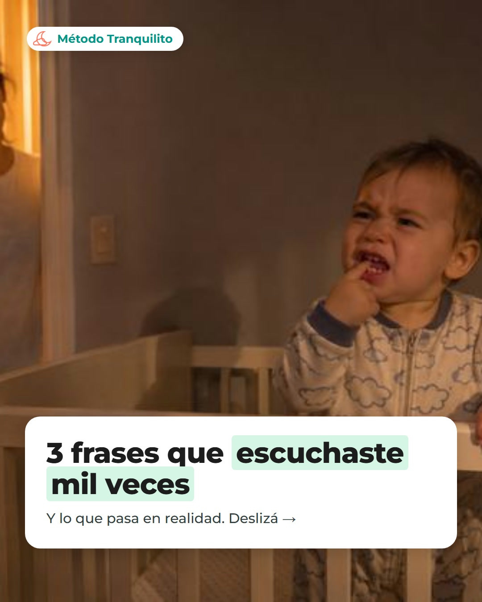
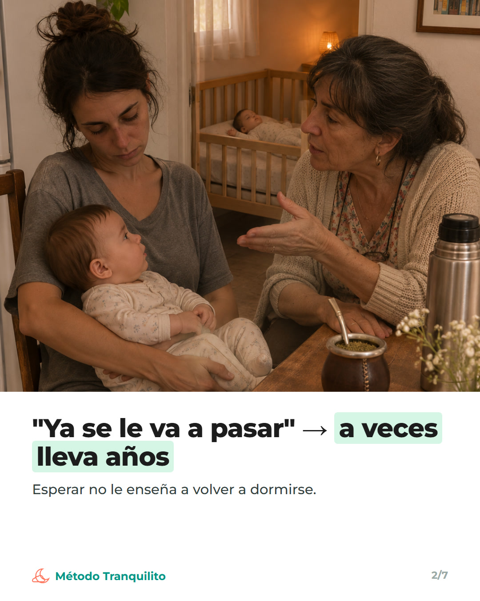
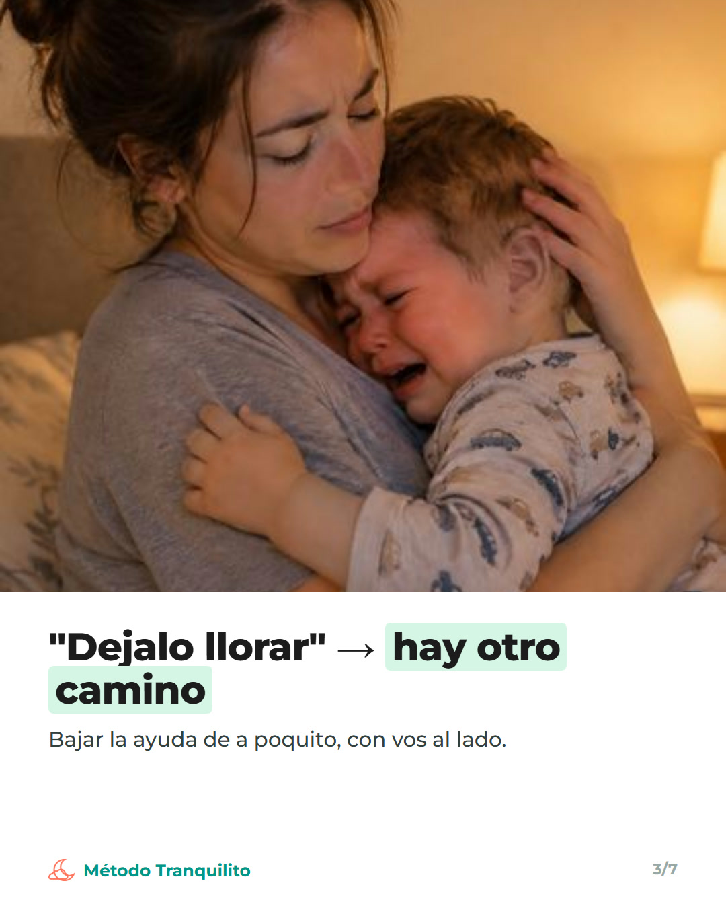
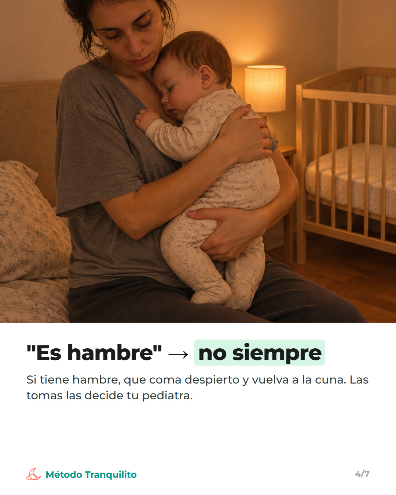
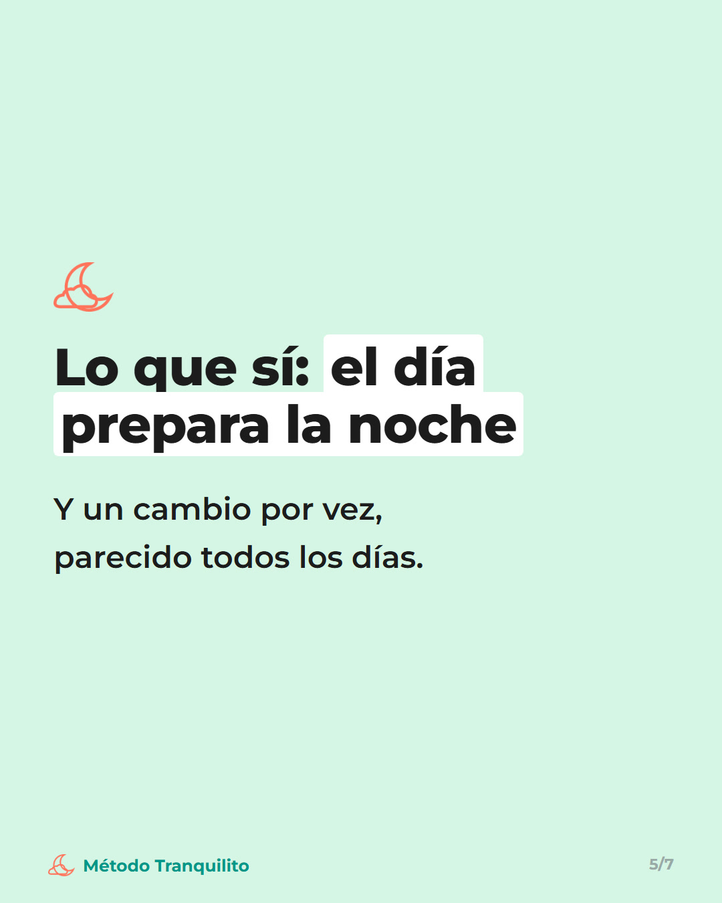
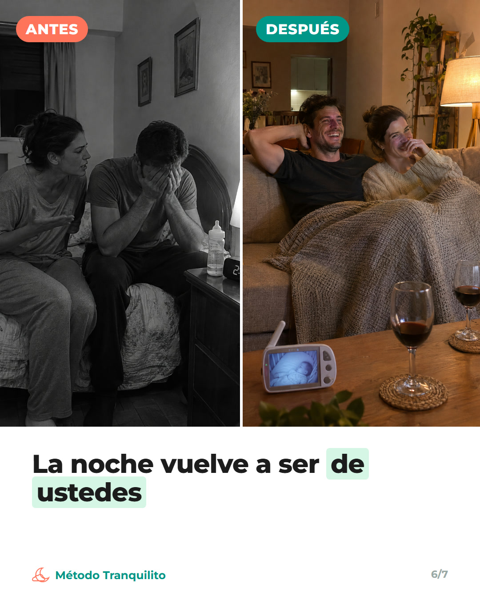
"Ya se le va a pasar." "Dejalo llorar." "Es hambre." Seguro te lo dijeron 🙃 🧩 Deslizá y mirá qué hay detrás de cada una. ✨ Y mirá la última: así se ven las noches cuando se resuelve. 🤍 No estás haciendo nada mal: te faltaba la explicación. 💬 Comentá DORMIR y te mando por privado el Método Tranquilito 🌙 el plan de 10 días para que aprenda a dormirse solito, sin dejarlo llorar 💌 #MetodoTranquilito #SueñoInfantil #MaternidadReal #CrianzaRespetuosa #BebéTranquilo #MamáPrimeriza
Lo dormís en brazos, contenés la respiración, lo pasás a la cuna… y a la media hora otra vez 🥲 🌙 Un escalón que ayuda: dormilo a upa hasta que esté bien relajado, con los ojitos pesados, y apoyalo en la cuna todavía despierto. ✋ Quedate con la mano en su panza o acariciándolo. 🧩 Es uno de los 5 escalones del método. Se sube de a uno, sin apuro y sin dejarlo llorar. 💬 Comentá DORMIR y te mando por privado el Método Tranquilito 🌙 el plan de 10 días para que aprenda a dormirse solito, sin dejarlo llorar 💌 #MetodoTranquilito #SueñoInfantil #MaternidadReal #CrianzaRespetuosa #BebéTranquilo #MamáPrimeriza